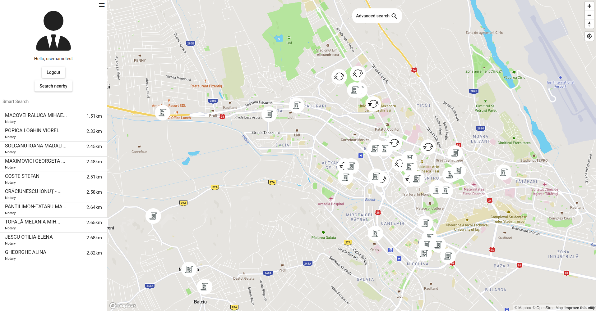

Using the official data regarding public notary entities [RO] and authorized translators + interpreters [RO], develop a smart modular
Web system capable to provide support for locating offices and services – such as notarized documents: acknowledgments, oaths/affirmations, copy certification, signature witnessing, others legal procedures – according to user preferences, geographical places, fees, restrictions, and other aspects (e.g., support for foreign citizens)
– consider also legal paper provenance. Via SPARQL endpoints, the application will offer useful maps – see also Place schema.org concept – and additional knowledge (contact info, timetable, reviews, related points of interest) about each notary office.
Introduction
NoW as known as Notary Knowledge Web Tool is a Web application following the Sematic Web principles,
developed as part the evaluation process for theWeb Application Development1 course.
Goals and Techical Requirements
As mentioned previously the project aims to offer a smart tool with the following goals in mind:
Visualize - data about public entities (notaries, translators, etc) offering services of legal nature in the near vicinity of the user's actual location.
The nature of the legal services the entity is able to perform should also be visible to the user using visual cues.
Filter - based on various criterias such as (the nearest point of interest, the prefered services, etc).
Model knowledge - based on the data that is currently available, every data aspect of the application should be annotated with schema.org concept such as to be easily crawled by intelligent agents.
Some of the most important requirements are as following:
The application should put emphasis on the ease of access, should be available on both mobile and desktop platforms.
To follow the Linked Data recommended practices for publishing structured data on the Web, in
order for the data to be processable by Semantic Web tools.
To use a knowledge graph/base and provide a SPARQL endpoint. The project is using data stored in
an RDF triple store using a set of frameworks (described in technologies section) and is
providing an endpoint at which other SPARQL clients can make queries and manipulate data.
To use various conceptual models such as schema.org5
To provide support for locating offices and services - such as notarized documents: acknowledgments, oaths/affirmations, copy certification, signature witnessing, others legal procedures
– according to user preferences, geographical places, fees, restrictions, and other aspects
To consider using legal paper provenance5 for enforcing the trust in the data, legal in nature, that is being exposed to the enduser.
Web Pages of the Application
The Front-end application was developed using the Angular framework and consists of a Singe-Page Application
.The Front-end application aims to offer an attractive and easy to use interface for the users in order to access the functionality of the backend services in an intuitive manner and non-convoluted manner.
Map Page
The map page provides and entry point for the application, the general purpose of this page is to present the user with a
map populated with pin type markers with all the public entities (notaries, translators, etc.) in his vicinity.
The user has the possibility to filter based on different criteria such as: offered services, language, etc or choose between
a list of entities in a fixed radius around him.
Map page - Entities are marked by pins

Map page - List of nearby entities
Login page
The login page provides the users the functionality of authentication. Although partly the functionality is available without authentication,
a few functions such as reviews are locked behind required authentication.
Login page - Example
Register Page
The register page provides the users the possibility to create an account which can be used to login at a later time.
Register Page - Example
Filter functionality
The filter functionality allows the user to filter through the available data using certain criteria such as: name, county, language and provider services.
After requesting a filter the number of markers on the map will adjust to reflect the filtered data.
Filter functionality - filter by name Macovei and county IASI
Entity and review functionality
The entity page allows the user to visualize additional information other than the physical location of the notary. Data such as the room, the city, the full address are exposed as well as a full list of services and their description.
If the user requests it can leave a review consisting of a rating from one to five and a comment for the entity, the review will be available for the other authenticated users once submitted.
Entity page - Example for MACOVEI RALUCA MIHAELAEntity page - Example of giving 1 star review to MACOVEI RALUCA MIHAELA
Swagger
The application also offers a REST API, and it's interface description follows the OpenAPI Specification
v3.1.05. The APIs provides access through the HTTP(S)
protocol to the data that is also backing-up the application.
Authors
The following people are actively participating at developing the project: